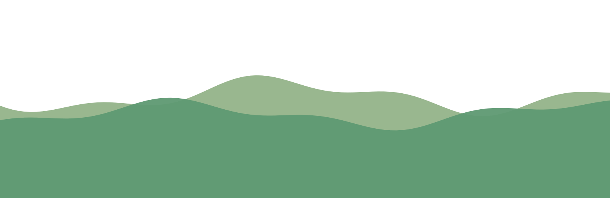
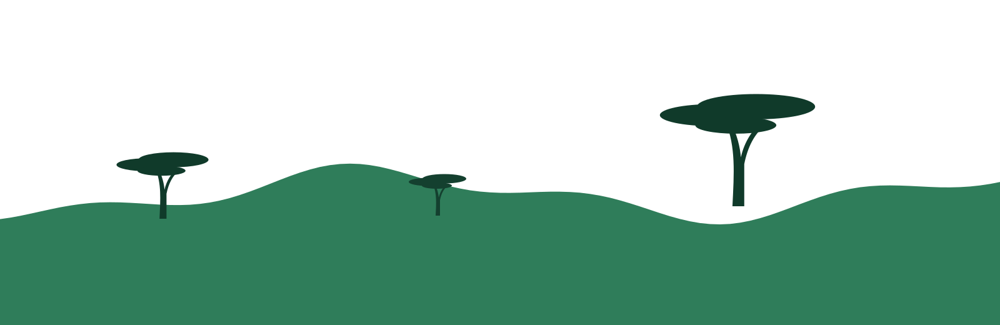
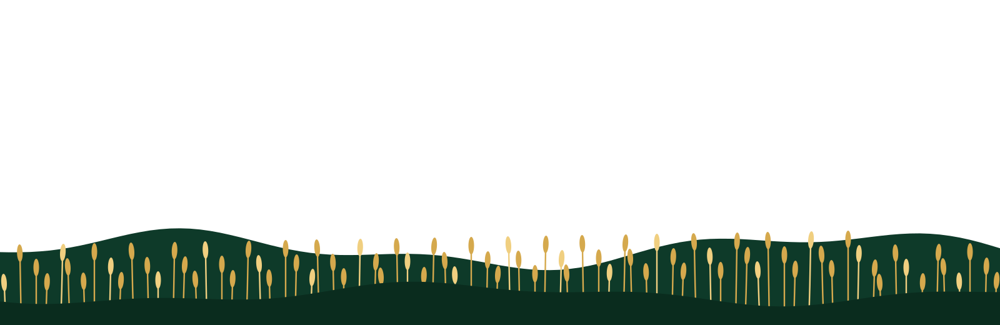

Construire des solutions durables, au plus près des communautés.
Mission Sahel accompagne les dynamiques locales et les initiatives de développement pour contribuer à des communautés plus résilientes, inclusives et autonomes.
Des réponses concrètes aux priorités locales
Les changements durables se construisent avec les communautés, en valorisant leurs savoir-faire et en renforçant leur capacité à agir.
- Écouter les besoins du terrain.
- Concevoir des actions adaptées aux territoires.
- Travailler avec les acteurs locaux.
- Documenter les résultats et apprentissages.
Agir sur les leviers du développement
Axes de présentation proposés à valider avec l’organisation avant publication.
Environnement & ressources naturelles
Préservation des ressources et gestion durable des territoires.
Agriculture & sécurité alimentaire
Résilience des moyens d’existence et initiatives agricoles locales.
Développement communautaire
Participation, structuration des groupes locaux et inclusion.
Accompagner les acteurs locaux
Une publication du 20 mai 2026 évoque la formalisation de groupements et de coopératives de pré-collecteurs de déchets dans le cadre du PRUBA. Le rôle exact de Mission Sahel doit être confirmé avant d’attribuer cette action à l’ONG.
Ces chiffres décrivent une activité mentionnée dans une source, pas les résultats globaux de l’ONG.
Voir les actualitésÉcouter. Agir. Apprendre. Rendre compte.
Diagnostic
Comprendre les besoins et priorités.
Co-construction
Définir les objectifs avec les acteurs.
Mise en œuvre
Coordonner les activités sur le terrain.
Suivi
Mesurer les progrès et partager les enseignements.
Vous souhaitez collaborer avec Mission Sahel ?
Échangeons autour de priorités communes et d’initiatives utiles aux communautés.